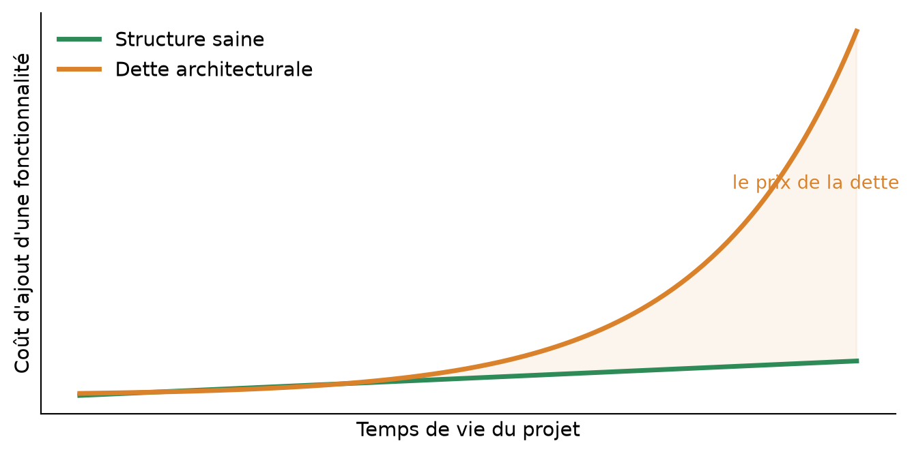

Du chaos aux couches : juger, diagnostiquer et refactorer une structure
Département de Mathématiques et Informatique, Faculté des Sciences et Techniques, Université Cheikh Anta Diop de Dakar
Contenu
Cette séance pose le socle du cours : ce qu’est une architecture logicielle, comment on la juge (attributs de qualité), comment on la diagnostique (couplage, cohésion), et comment on l’améliore en sécurité (refactoring vers une architecture en couches). Le lab applique tout cela à SénResto, notre plateforme de livraison de repas à Dakar.
La situation
SénResto permet de commander un thiéboudienne chez Fatou à la Médina ou un mafé chez Aminata à Ouakam, d’assigner un livreur et de suivre la commande jusqu’à la livraison. L’application fonctionne parfaitement : le frontend React est agréable, l’API répond, les livreurs sont assignés, les montants sont justes.
Et pourtant : tout le backend tient dans une seule classe de 414 lignes. La question de la séance — et du semestre :
La question centrale
Si l’application fonctionne, qu’est-ce qui ne va pas ? Pour qui est-elle mauvaise, et quand cela se paiera-t-il ?
Définition
L’architecture d’un logiciel est sa structure : les parties qui le composent, la responsabilité de chacune, et les dépendances entre elles. Ce sont les décisions structurantes — celles qui seraient coûteuses à changer une fois prises.
À retenir
L’architecture ne se voit pas à l’écran. Deux applications identiques pour l’utilisateur peuvent être, pour l’équipe qui les maintient, un plaisir ou un cauchemar.
Un restaurant bien organisé
En salle, le serveur prend les commandes et sert — il ne cuisine pas. En cuisine, le chef applique les recettes — il ne fait pas le service. Au cellier, le magasinier gère les stocks — il ne cuisine pas. Chacun a un métier, et la commande circule dans un seul sens : salle \(\to\) cuisine \(\to\) cellier.
Imaginez maintenant le restaurant où une seule personne prend les commandes, cuisine, gère le stock et encaisse. Ça marche… tant qu’il y a trois clients, et tant qu’elle ne tombe pas malade. C’est exactement l’état de SénResto aujourd’hui.
À retenir
Une bonne structure permet de comprendre, modifier, tester et remplacer chaque partie séparément. C’est vrai d’un restaurant, c’est vrai d’un logiciel.
Dette architecturale
La dette architecturale est le coût futur créé par les raccourcis structurels d’aujourd’hui. Comme une dette d’argent, elle porte intérêt : chaque fonctionnalité coûte plus cher que la précédente.

Au début, les deux courbes se confondent — la mauvaise structure est même souvent plus rapide. C’est pour cela qu’on la choisit… et qu’on la regrette.
import matplotlib
import matplotlib.pyplot as plt
import numpy as np
plt.rcParams["font.family"] = "DejaVu Sans"
plt.rcParams["font.size"] = 11
t = np.linspace(0, 10, 200)
saine = 1.0 + 0.06 * t # structure saine : cout quasi constant
dette = 1.0 + 0.035 * np.exp(0.52 * t) # dette : cout qui explose
fig, ax = plt.subplots(figsize=(7.2, 3.6))
ax.plot(t, saine, color="#2E8B57", lw=2.6, label="Structure saine")
ax.plot(t, dette, color="#D9822B", lw=2.6, label="Dette architecturale")
ax.fill_between(t, saine, dette, where=dette > saine, color="#D9822B", alpha=0.08)
ax.annotate("le prix de la dette", xy=(8.4, 4.6), fontsize=10, color="#D9822B")
ax.set_xlabel("Temps de vie du projet")
ax.set_ylabel("Coût d'ajout d'une fonctionnalité")
ax.set_xticks([]); ax.set_yticks([])
ax.spines[["top", "right"]].set_visible(False)
ax.legend(frameon=False, loc="upper left")
fig.tight_layout()Attributs de qualité
Les attributs de qualité sont les propriétés non fonctionnelles par lesquelles on juge une structure. Chacun se traduit par une question concrète et vérifiable.
| Attribut | La question concrète |
|---|---|
| Maintenabilité | Combien de fichiers faut-il toucher pour ajouter un quartier livrable ? |
| Testabilité | Peut-on vérifier la formule des frais sans démarrer une base de données ? |
| Évolutivité | Ajouter le paiement mobile money : chantier local ou refonte générale ? |
| Lisibilité | Un nouveau membre du groupe comprend-il où vit chaque règle ? |
| Résilience | Si une partie tombe, le reste survit-il ? (rendez-vous au Lab 5) |
Trade-off
Un trade-off est un échange : améliorer un attribut se paie presque toujours en dégradant un autre. Il n’existe pas de « meilleure architecture » dans l’absolu — seulement des architectures adaptées à un contexte.
À retenir — la devise du semestre
Un architecte ne demande jamais « quelle est la meilleure solution ? » mais « qu’est-ce que j’achète, et avec quoi je le paie ? ». Chaque ADR que vous rédigerez devra nommer ce qui est payé.
Définition
Le couplage mesure à quel point les parties d’un système dépendent les unes des autres. Il se lit dans une question : si je modifie ceci, qu’est-ce que je risque de casser ?
Définition
La cohésion mesure à quel point les éléments regroupés ensemble le sont pour une bonne raison — parce qu’ils participent à la même responsabilité.
Test rapide sur SénResto
Décrivez SenRestoController en une phrase sans dire « et » : « il reçoit les requêtes HTTP et valide les données et calcule les frais et écrit le SQL et assigne les livreurs et envoie les SMS… » Chaque « et » est un aveu : la classe a plusieurs métiers, sa cohésion est faible.
La devise
Couplage faible, cohésion forte. Chaque module fait une chose (cohésion), et dépend du minimum d’autres modules (couplage). C’est le principe de responsabilité unique, à toutes les échelles.
Un God controller : toutes les responsabilités dans une classe. Au lab, vous cartographierez ligne par ligne les sept défauts de cette structure.
Rien ne se teste isolément
Pour vérifier la simple formule « prix \(\times\) quantité \(+\) frais », il faut aujourd’hui : démarrer Spring, initialiser une base de données, construire une requête HTTP, et analyser du JSON. La règle métier est prisonnière de la technique qui l’entoure.
Vérité de terrain
La duplication aggrave tout : la liste des quartiers de Dakar existe en trois exemplaires (frais, GPS, formulaire React). Ouvrir la livraison aux Parcelles Assainies = trois modifications à ne pas oublier. La probabilité d’oubli croît avec le temps… et se découvre en production.
| Couche | Son métier | Ce qu’elle s’interdit |
|---|---|---|
| Présentation ( controller) |
parler HTTP : routes, codes de statut, sérialisation | toute règle métier, tout SQL |
| Service ( service) |
le métier : validation, règles, calculs, transitions d’état | parler HTTP, parler SQL |
| Accès aux données ( repository) |
tout le SQL, et rien que le SQL | valider, décider, calculer |
La règle d’or
Les dépendances vont dans un seul sens, du haut vers le bas, et chaque couche ne connaît que sa voisine immédiate. Le controller ignore la base ; le repository ignore HTTP.
Avant : la validation vit dans l’endpoint, testable uniquement via HTTP + BDD. Après : elle vit dans le service, et lève une exception métier — testable en une ligne, sans rien démarrer :
@RestControllerAdvice traduit les exceptions métier en codes HTTP — là où le God controller répétait neuf fois le même bloc d’erreur.Définition
Le refactoring consiste à améliorer la structure interne d’un code sans changer son comportement observable. Mêmes routes, mêmes JSON, mêmes codes d’erreur : le frontend ne doit rien remarquer du chantier.
Le piège classique
« Tant qu’on y est, corrigeons aussi ce petit bug… » — Non. Changer le comportement pendant un refactoring, c’est perdre son juge de paix : un test casse, et on ne sait plus si c’est la structure ou le comportement. Une intention à la fois.
La méthode des petits pas
Extraire une responsabilité \(\to\) relancer les tests \(\to\) committer \(\to\) recommencer. Le refactoring avance en pas de fourmi, mais il n’échoue jamais.
Le projet fournit quatre tests d’intégration qui décrivent le comportement de l’API — et ignorent tout de sa structure interne. C’est précisément pour cela qu’ils survivront au refactoring :
git), on comprend, on recommence plus petit.À retenir
On ne refactore jamais sans filet. Les tests transforment une opération à cœur ouvert en une promenade balisée.
Le code de départ de chaque lab du semestre sera l’état final du lab précédent : rester dans le rythme, c’est capitaliser.
| Rôle | Pilotage au Lab 1 |
|---|---|
| Le Doyen | branches feature/, merges, tags — et l’ADR avec l’Architecte du jour |
| L’Huissier | CommandeService, exceptions métier, GestionnaireErreurs |
| Le Rédacteur | RestaurantService, puis les DTOs (le contrat de son frontend) |
| Le Notaire | l’inventaire SQL, puis les trois repositories |
| L’Appariteur | LivreurService, QuartiersDakar, vérification H2 + PostgreSQL |
Le livrable individuel de la séance
L’Architecte du jour signe l’ADR no1 : « Pourquoi séparer en couches ? » — une page, deux alternatives sérieuses, deux conséquences négatives assumées (gabarit distribué).
À retenir
La question qui ouvre la séance 2
Votre code sera propre ce soir… mais vos règles métier dépendront toujours, trois étages plus bas, d’une base de données. Peut-on retourner cette dépendance comme un gant ? Réponse au Lab 2 : l’architecture hexagonale.